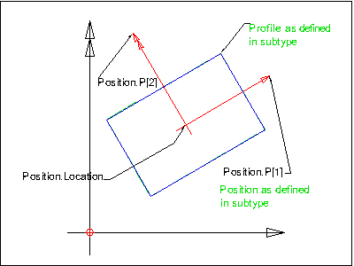
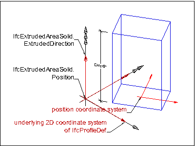
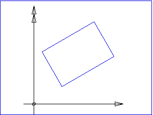

Definition from IAI: The IfcProfileDef is the supertype of all definitions of standard and arbitrary profiles within IFC. It is used to define a standard set of commonly used profiles by their parameters or by their explicit curve geometry. Those profile definitions are used within the geometry and geometric model resource to create either swept surfaces or swept area solids. The purpose of the profile definition within the swept surfaces or swept area solids is to define a cross section. Profiles are also used within sectioned spines, where the consecutive profiles can be based on transformations of the start profile given by derived profiles.
NOTE: Subtypes of the IfcProfileDef contain parameterized profiles (as subtypes of IfcParameterizedProfileDef) which establish their own 2D position coordinate system, profiles given by explicit curve geometry (either open or closed profiles) and two special types for composite profiles and derived profiles, based on a 2D Cartesian transformation.
Parameterized profiles are 2D primitives, which are used within the industry to describe cross sections by a description of its parameters. Arbitrary profiles are cross sections defined by an outer boundary as bounded curve, which may also include holes, defined by inner bounderies. Derived profiles, based on a transformation of a parent profile, are also part of the profile definitions available. In addition composite profiles can be defined, which include two or more profile definitions to define the resulting profile.
An IfcProfileDef is treated as bounded area if it is used within swept area solids. In this case, the inside of the profile is part of the profile. The attribute ProfileType is set to AREA. An IfcProfileDef is treated as a curve if it is used within swept surfaces. In this case, the inside of the profile (if the curve is closed) is not part of the profile. The attribute ProfileType is set to CURVE. The optional attribute ProfileName can be used to designate a standard profile type as e.g. given in profile tables for steel profiles.
HISTORY: New class in IFC Release 1.5, the capabilities have been extended in IFC Release 2x. Profiles can now support swept surfaces and swept area solids with inner boundaries. It had been renamed from IfcAttDrivenProfileDef.
Illustration:
 |
Position Note: The parameterized profile definition defines a 2D position coordinate system, relative to the underlying 2D coordinate system of the IfcProfileDef. |
Geometry use case:
 |
In the later use of the IfcProfileDef within the
the underlying coordinate system of the resulting boundaries (2D coordinate system of IfcProfileDef) is placed within the xy plane of the 3D position coordinate system of the swept area solid. The placement is at (0.,0.) and the directions are (1.,0.) and (0.,1.). The profile is inserted into the underlying coordinate system either:
|
Table: Use of parameterized profiles within the swept area solid
Use cases:
Results of the different usage of the ProfileType attribute are demonstrated here. The ProfileType defines whether the inside (the bounded area) is part of the profile definition (Area) or not (Curve).
 |
ProfileType = AREA |
 |
ProfileType = CURVE |
Table: Resulting area or curve depending on ProfileType